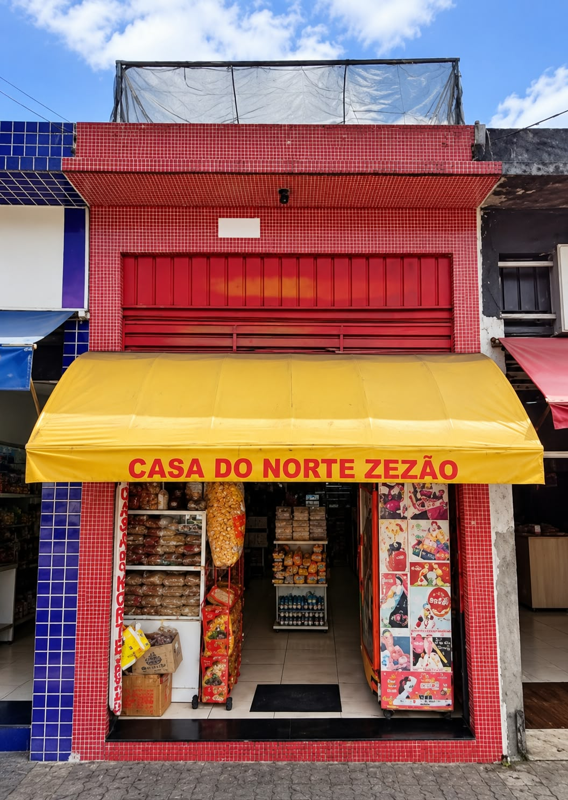
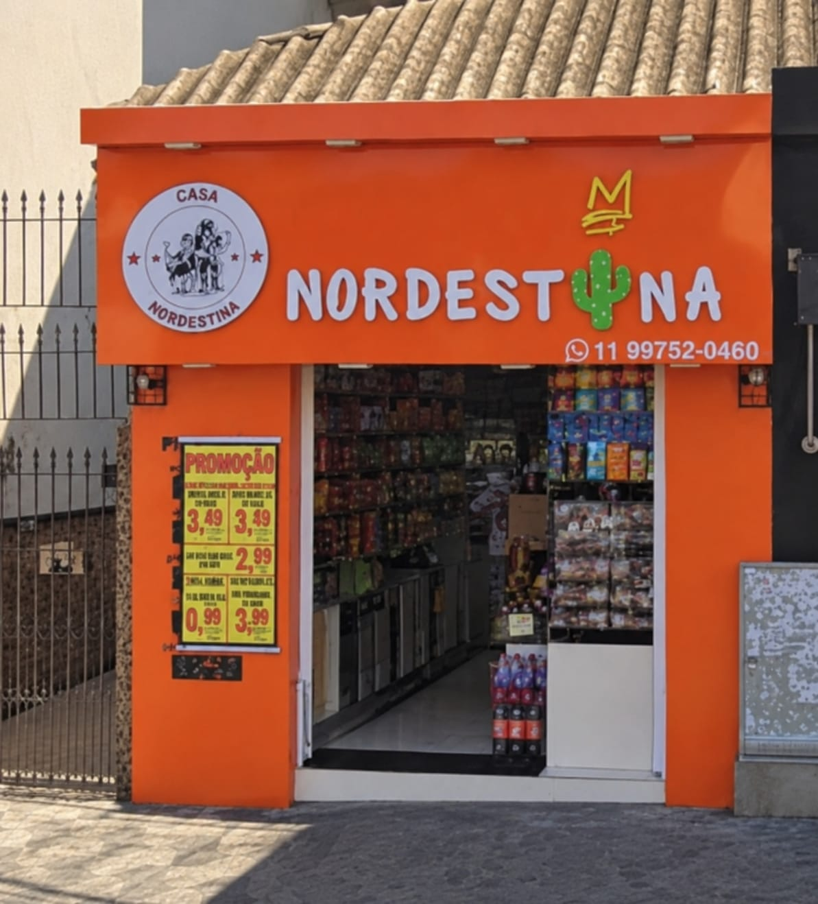

Acesso
Cadastro e login de funcionários com nome, e-mail e senha.
Primeiro projeto da Black Hole
Um sistema web para controlar lotes de produtos e imprimir etiquetas com validade, peso e preço, sem conta feita à mão e sem perder o histórico.

Vídeo pitch do projeto
Neste vídeo você acompanha as telas do sistema: do cadastro de um lote até a etiqueta pronta para imprimir, passando pelo histórico e pelos alertas de vencimento.
Clique no botão para assistir em tela cheia. Para sair, aperte Esc ou use o botão Fechar.
É o Sistema de Gestão e Impressão de Etiquetas. Ele apoia o cadastro de lotes, o cálculo de validade e de preço, a geração e a impressão das etiquetas, a consulta do histórico e o acompanhamento de vencimentos, sempre com o registro de tudo o que foi feito.
Cada etiqueta sai com as informações que o cliente precisa ver:
Cadastro e login de funcionários com nome, e-mail e senha.
Cadastro de lotes com peso líquido, tara, código, produto, preço por kg e data de embalagem. O sistema confere os dados e barra lote repetido.
Calcula a validade (data de embalagem mais o prazo da categoria) e o valor total (peso líquido vezes preço por kg).
Mostra a prévia, define as cópias, escolhe a impressora e envia para imprimir.
Busca por lote, produto, operador ou período. Permite reimprimir ou cancelar, guardando o motivo.
Avisa quando um produto está perto de vencer e destaca o que já venceu. O número de dias do aviso muda de acordo com o produto.
O gerente configura produtos, categorias, prazos de validade e impressoras.
Antes de programar, escrevemos o que o sistema precisa fazer, que qualidades precisa ter e quais regras do negócio ele segue. É essa lista que guia todo o trabalho. Os passos seguintes, como os diagramas, estão nos bastidores.
Entra no sistema, cadastra lotes, gera e imprime etiquetas e consulta o histórico.
Faz tudo o que o funcionário faz e também configura produtos, prazos de validade e impressoras.
Recebe as etiquetas enviadas pelo sistema. O projeto prevê impressoras térmicas.
A data de validade é a data de embalagem somada ao prazo definido para a categoria do produto.
O aviso de produto próximo do vencimento não tem um número fixo de dias: ele varia de acordo com o produto. Depois da data, o produto aparece como vencido.
Cada emissão guarda data e hora, número de cópias e operador. Reimpressão e cancelamento guardam também o motivo.
Os lugares que visitamos para entender o problema na prática.

Casa do Norte

Casa do Norte

Casa do Norte
Identidade visual
A logo é um sol de traços irregulares, que lembra o sol forte do Norte e Nordeste e o jeito artesanal do que é feito à mão. Ela reúne a referência do lugar, o estilo da cultura e cores fortes numa identidade única.
A versão restrita, em branco, é a que vai nas etiquetas do sistema. As cores principais, amarelo e laranja (também em gradiente), devem estar sempre presentes; o marrom e o preto são de apoio e não devem passar de 30% da área da peça.
O material completo tem 6 páginas: apresentação, logo principal, uso das cores, logo restrita, paleta primária e secundária e encerramento.
Dá para ampliar, abrir em tela cheia e baixar o PDF.
Veja como foi feito ou peça um orçamento.